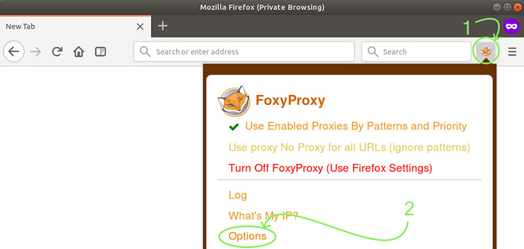
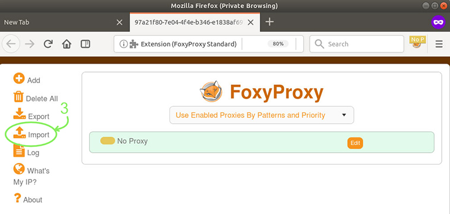
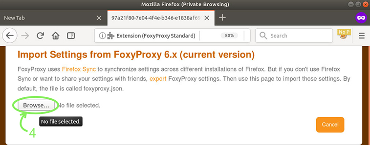
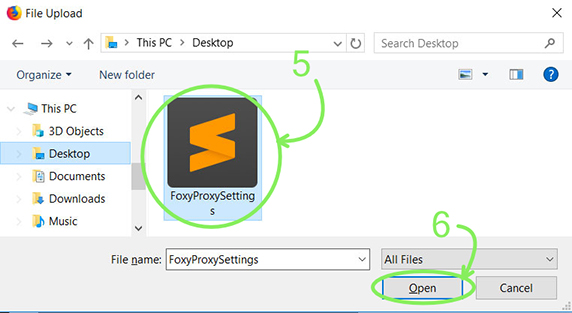
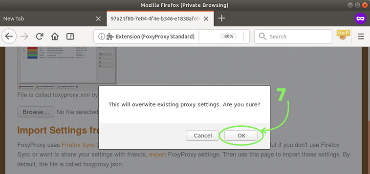
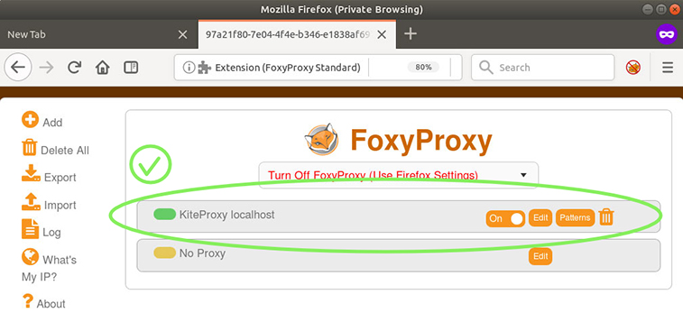
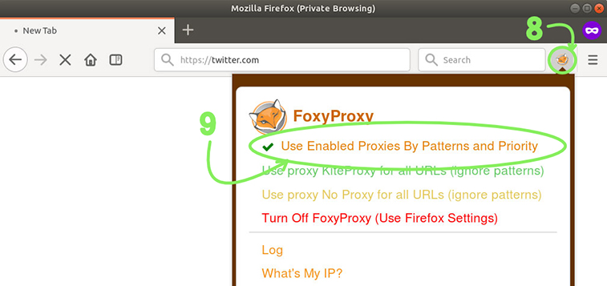

Config auto-switch to KiteProxy on Facebook, Youtube, Twitter, Vimeo..
1. Open FoxyProxy menu list in firefox, click on Options menu

2. click on Import

3. Click Browse... under Import Settings from FoxyProxy 6.x.

4. Open the settings file you saved from KiteProxy post install.

5. Confirm that you want to override your current settings.

7. Now you have KiteProxy right there with Patterns that match common filtered websites.

8. Open FoxyProxy menu again and select Use Enabled Proxies By Patterns and Priority.
